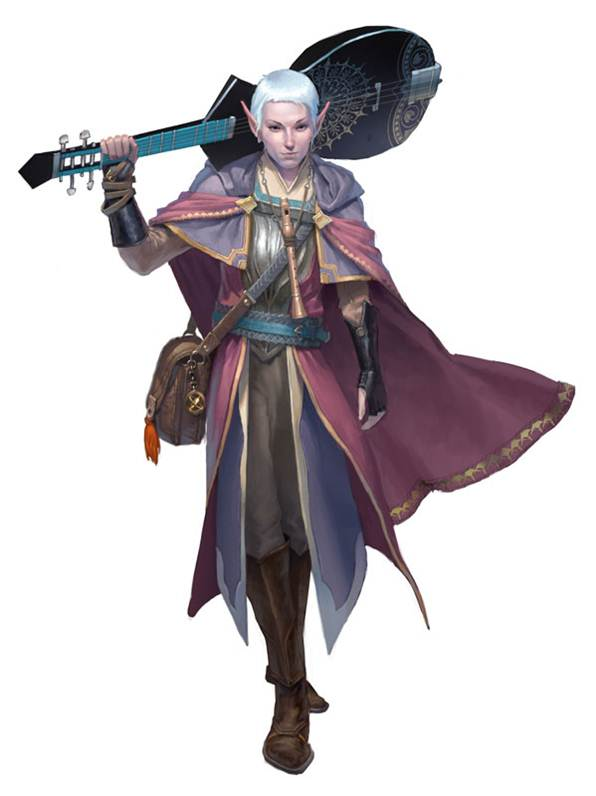

According to Wizards of the Coast, "In the worlds of D&D, words and music are not just vibrations of air, but vocalizations with power all their own. The bard is a master of song, speech, and the magic they contain. Bards say that the multiverse was spoken into existence, that the words of the gods gave it shape, and that echoes of these primordial Words of Creation still resound throughout the cosmos. The music of bards is an attempt to snatch and harness those echoes, subtly woven into their spells and powers."
Bards have a sterotype of being the charismatic, goofy ones, but that isn't always true. Bards are always charismatic, weilding pieces of Words of Creation, but they aren't always a street preformer. Some bards may come from soldier backgrounds as drummer boys, some may not even be musicians at all; the 'art' that drives them can be anything.
Bardic inspiration! Grant an additional dice to use to your fellow players!
